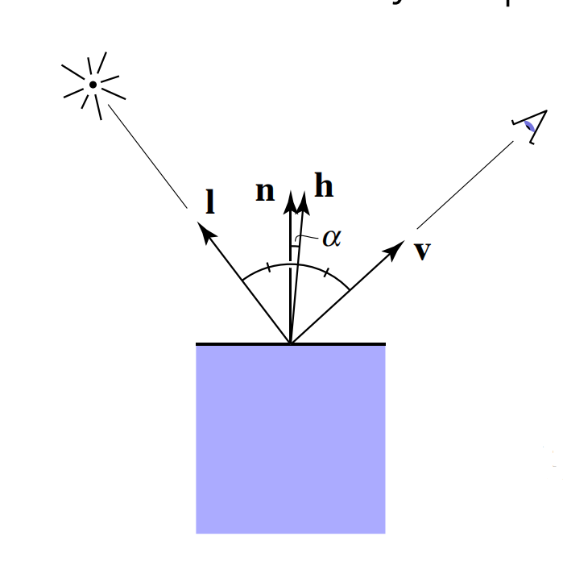
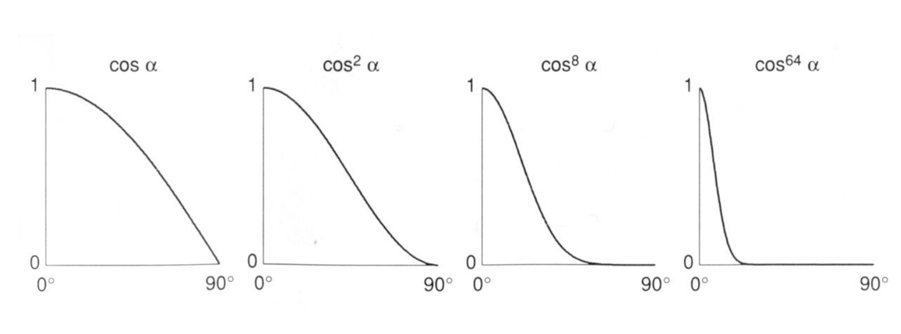

颜色、光源和漫反射
光照这节并不是实现真实的光照效果，最后实现的效果是经验模型。
真正的光线照亮场景的效果在图形学中被另外称为光线追踪，就是游戏玩家常说的光追。光线追中是用来模仿真实的光线效果，是仿真技术。
关于光线反射
光线的传播有多种方式：散射、反射、投射、衍射，到处都能查到它们的相关知识，在此不再介绍它们的定义。
本文主要介绍反射中的两个分支，镜面反射和漫反射。同样本文也不会讲解反射的仿真技术，大部分内容是冯氏光照模型（Phong Lighting Model）和兰伯特光照模型（Lambertian Lighting Model）是两种常见的光照模型。
颜色相乘相加
我们使用向量逐项乘积来描述两个 rgb 颜色的相乘，写作 A ⊙ B，这个计算方式又叫做 Hadamard 乘积。使用向量逐项相加来描述 rgb 颜色的相加，写作 A ⊕ B。无论是颜色相乘还是相加，我们使用的 rgb 通道都是 [0, 1] 区间，如果使用其他区间的颜色，需要先进行归一化。
⊙ 和 ⊕ 这两个符号不好打，后面使用 * 表示向量的逐项乘积，使用 + 表示向量的逐项相加。
在描述颜色相乘时，因为使用的是 [0, 1] 的 rgb 颜色通道，所以颜色相乘的结果就会越来越小，颜色相乘后让颜色变得更加暗淡，而不是更加明亮。不难看出，白色 rgb(1, 1, 1) 和任何颜色相乘都不会改变对应的颜色，而黑色和其他颜色相乘会都是黑色。
颜色相加时，rgb 三个通道的颜色会叠加，颜色相加后就会越来越亮。但是有一个问题，颜色相加后的值可能会溢出 [0, 1] 区间，所以我们需要设置各个通道叠加结果的阈值为 1。在渲染时计算有有所改动：
$$[r, g, b] + [r', g' ,b'] = clamp([rr', gg', bb'], 0, 1)$$
其中 clamp 函数表示把数据剪裁到 [0, 1] 区间，使得每个通道超过 1 时取 1，小于 0 时取 0。
光照的经验模型
科学上形容光的强度单位有流明（lm）、烛光（cd）、勒克斯（lx），而颜色又由光的波长决定。但在经验模型中我们统一用颜色 rgb 模型来形容光的强度和颜色。
比如标准的白光就是 rgb(1, 1, 1)，而不那么强的白光就是 rgb(0.8, 0.8, 0.8)，颜色的各通道有所降低，所以缩放光的大小可以表示为改变光的强度。
描述红光则可以使用 rgb(1, 0, 0)，所以改变光的颜色可以通过改变颜色通道表示。
假如光源是白色，那么照射到物体表面时就会反映物体表面的颜色，如果的强度为 0，那么就不会照亮物体，物体表面就会是黑色什么都看不到。这和颜色相乘类似。所以在 经验模型中，光源照射到物体表面后的颜色使用颜色乘积表示。设物体表面某个点的颜色是 $c$，光照强度是 $I$，那么一个点受到光照后的颜色 $c'$ 就是：
$$c' = c * I$$
注意这里我们并不考虑任何光反射的问题，只是考虑光的颜色该如何与物体表面的颜色结合。
反过来想，假设物体表面都是白色，场景中一个红光一个蓝光照向物体，那么物体表面就应该是红光加上蓝光的结果。所以在 经验模型中，多个光源的照射物体表面的效果可以使用颜色相加表示。设场景中的照向物体某个点的光源依次是 $I1、I2、I3...$，这个点的颜色 c，那么多个光源作用这个点后得到颜色 c' 就是：
$$c' = c * I1 + c * I2 + c * I3 + ... $$ 简化： $$c' = c * (I1 + I2 + I3 + ...)$$
同上，这里我们也并不考虑任何光反射的问题，只是考虑多个光的照射结果如何结合。
平行光
平行光表示所有光束互相平行方向相同的光源。从经验模型来说，我们认为平行光是不会衰减的，即光照强度是恒定的。
那么在经验模型中描述一个平行光，只需要知道方向和光的 rgb 值即可。
点光源
一个点光源类似一个很小的灯泡，光速沿着一个点朝着四面八方照射。 从经验模型上来说，我们认为以点光源为中心的单位球体上每个点的光照强度是 $I$，那么单位球上所有点的光照强度之和就是球体表面积乘以 $I$，单位球的半径是 1 ，那么单位球上的光照之和就是：
$$光照和 = 单位球表面积 * I = 4π1^2 * I = 4πI $$
从经验模型上，我们认为点光源随着传播距离的延长光的能量和并不会衰减，即以点光源为球心任意半径 r 的球体，其表面积上的光照和与单位球相同，因为假定光的能力不衰减嘛。那么就有：
$$ 单位球上光照和 = 半径为 r 上的光照和$$
设半径为 r 上任意点的光照强度是 I'，联合前面的公式有：
$$ 4πI = 4πr^2 * I'$$ $$ I' = \frac{I}{r^2}$$
把物体表面某个点距离点光源的距离看做半径，那么这个点光的大小就可以使用上式表示。
环境光照
现实生活中，我们的环境类似有一个整体的亮度，比如白天在家里照样很亮。但实际上这是光源照射到房间内，经过多次反射折射衍射散射从而得到的结果。这不是不能算，只是计算量太大，在实时渲染的时候 ppt 都不如。
所以环境光照就是一个大胆的假设，它指定了环境的一个整体亮度，环境光照是没有方向的，所有的点都会被照亮。
所以环境光照的值就是一个 rgb 向量，它表示环境光照的强度和颜色。
漫反射
漫反射实际上因为反射介质表面凹凸不平造成的，这会让光线朝着四面八方反射出去。如图：
图片来自维基百科
我们可以从微观上考虑这种凹凸不平的情况，但是它的计算量太大。但是如果从宏观上看的话，漫反射就像把一束光反射到四面八方去，所以经验模型中大胆的假设了宏观上漫反射就是会把光反射到任何地方，即对于一束光射向物体后的漫反射，从任何地方查看的结果都相同。类似下面的效果：
图片来自 games101
但是光的入射角我们还没考虑，比如下图：
图片来自 games101
当光线直射物体表面的时候，明显能接收到更多的光能，所以应该就会更亮，所以光线和物体表面法向量的夹角就有一定关系。从图中不难看出，夹角绝对值越小，物体表面应该更亮，超过 90° 就应该照不到这个光源。
在经验模型中，我们又大胆假设，漫反射的强度就使用光路反方向和物体表面法向量夹角的 cos 值确定。
设光线的反方向是 $l$，物体表面的法向量是 $n$，光的值是 $I$，那么被照射的点接受到的光就是：
$$I' = I\ n \cdot l$$
但是一旦表面超过 90° 就不会作用到关照，失去了计算意义并有可能导致错误计算，所以修改为：
$$I' = Imax(0, n \cdot l)$$
其中 max 表示一个函数，取两个参数中的大的值作为结果。
可以看到这个式子和我们观看的方向无关，这正好对应了漫反射的效果，一束光照射到物体表面经过漫反射发射到任何一个方向上去。
然而这个式子还有点问题就是，光源经过漫反射后没有任何的损耗。但是从微观的角度上看，因为物体表面不平形成了漫反射，有的反射可能压根就没有反射出去，被物体吸收了。我们把这部分被吸收的光看着损耗的光，大胆的假设了一个 kd 表示最后能扩散多少光出去，那么式子就变成了：
$$I' = k_dImax(0, n \cdot l)$$
漫反射和点光源
前面我们计算了漫反射和点光源的经验模型，现在可以把它们进行结合：
$$I' = k_d \frac{I}{r^2} max(0, n \cdot l)$$
至于平行光不用讲述，平行光任何情况下的方向和值都相同，所以直接使用漫反射公式即可。
我也不知道这个计算模型是 Lambertian 还是 Phong，games101 和维基百科上说的不一致。
镜面反射
镜面反射类似光束从比较光滑的平面反射的效果，比如镜子的反射。镜面反射比较明显的效果就是形成一个高光。
镜面反射和视觉方向就产生了关系，因为灯泡的一束光照向镜子，我们必须选择合适的角度才能透过镜子看到灯泡。当这束光的从镜子反射的出射方向就正好和我们的接近时，光束就会越来越强烈。如图：
图片来自 games101
但是现实生活中，很多物体表面并不都像镜子一样光滑，光束会因为漫反射形成一个高光区域。我们的视线不用完全和出射方向对其就能看到高光。
所以冯·诺伊曼就提出让出射角度和视线反方向的夹角来影响高光的效果，这个模型的问题是，出射角度我们很难算。
一般来说，在编程时，我们在准备数据的时候就知道了上图中的 l、n、v 三个向量。但是 R 向量也就是出射方向的向量就很难计算，需要先叉乘 l 和 n 得到另一条法向量，然后让 l 绕着法向量旋转 2 倍的 l 和 n 的夹角角度。显而易见它不够快。
所以吉姆·布林在此基础上做了改进，查看下图：
图片来自 games101
吉姆·布林让 l 加上 v 归一化后得到了 h，h 则是入射角和视线反方向的半程向量。然后用 n 和 h 的夹角来描述是否有高光，h 就非常好算了，让 l + n 进行归一化即可。 可以看到，如果视线正好在出射方向上s，那么 n 和 h 的夹角就是 0，反之这个夹角就会越来越大，这个夹角的大小正好和我们看到的高光正相关。
吉姆·布林给出模型又称 Blinn-Phong 模型，针对光的值 $I$，计算公式如下：
$$I' = k_s I (n \cdot h)^p $$
其中，$k_s$ 是反射系数，同前面漫反射的公式一样，Blinn-Phong 模型认为光不是完全反射，有一部分被吸收了，就是用这个值指定。$n \cdot h = cos(α)$ 用来表示余弦越大、高光越大，提供一个正相关的关系。然后是那个指数 p，因为高光实际上是集中在一个很小的区域的，所以 n 和 h 角度稍微大一点，我们就应该看不到高光了，所以我们需要使用指数把 $n \cdot h$ 的值进行压缩，如图：
图片来自 games101
使用指数压缩后可以看见，角度稍微大一点值就接近 0 和，高光就消失了。
这里是 games101 中给出的图片，当扩展系数 $k_s$ 和指数 p 变化时，我们看到的着色效果：
图片来自 games101
games101 中给出的模型有一个 max 函数，实际上并用不到，因为 $n \cdot h$ 永远大于 0，不放心也可以加上。
镜面反射和点光源
现在我们结合镜面反射和点光源的模型，把点光源最后的计算结果带入镜面反射模型，那么一个点光源使用镜面反射后光的值为：
$$I' = k_d \frac{I}{r^2} (n \cdot h)^p $$
完整的 Blinn-Phong 模型
一个完整的 Blinn-Phong 模型由环境光、漫反射、镜面反射（即高光）三部分组成，它们共同描述了物体表面某一个点受到的光照效果，合并如下：
$$L = 环境光 + 漫反射 + 镜面反射$$
对于平行光则为：
$$L = L_{环境光} + k_dImax(0,n \cdot l) + k_sI(n \cdot h)^p$$
对于点光源则为：
$$L = L_{环境光} + k_d \frac{I}{r^2} max(0,n \cdot l) + k_s \frac{I}{r^2} (n \cdot h)^p$$
并且这个式子是的上限取决于场景中有多少光源，一般来说环境光照或者平行光都只有一个，但是点光源可以有多个。